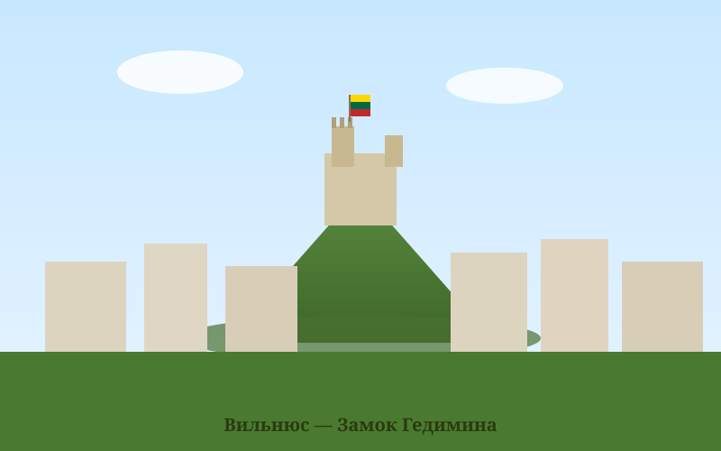
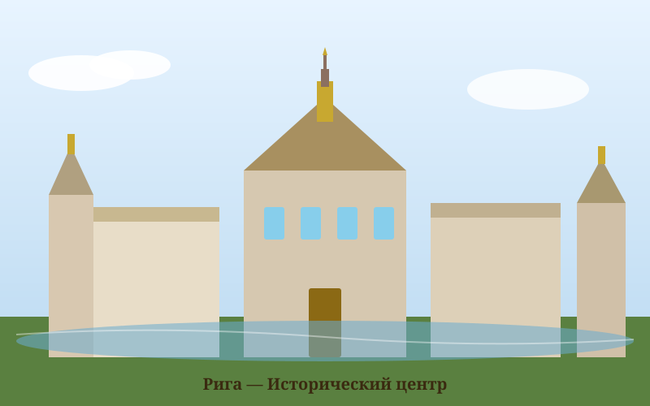
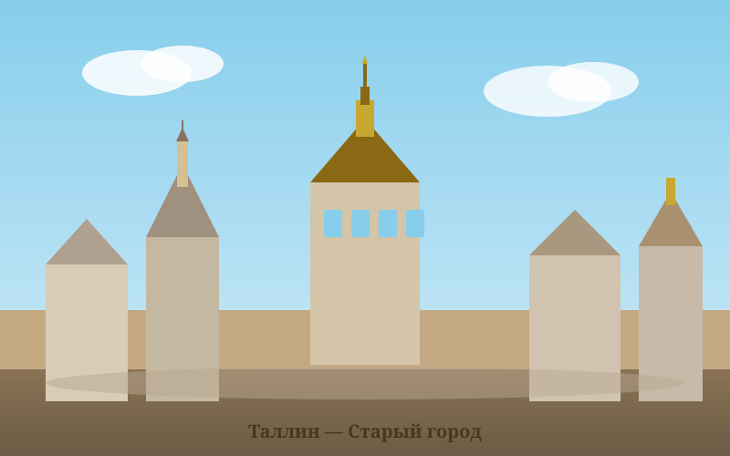

История Балтии
От древних балтийских племён до современных европейских государств
Сравнение стран Балтии
Основные факты и характеристики трёх прибалтийских государств
| Характеристика | 🇱🇹 Литва | 🇱🇻 Латвия | 🇪🇪 Эстония |
|---|---|---|---|
| Столица | Вильнюс | Рига | Таллин |
| Площадь | 65 300 км² | 64 589 км² | 45 228 км² |
| Население | ~2,8 млн чел. | ~1,8 млн чел. | ~1,3 млн чел. |
| Официальный язык | Литовский | Латышский | Эстонский |
| Языковая группа | Балтийская (индоевропейская) | Балтийская (индоевропейская) | Финно-угорская |
| Независимость провозглашена | 11 марта 1990 | 4 мая 1990 | 20 августа 1991 |
| Членство в ЕС | 1 мая 2004 | 1 мая 2004 | 1 мая 2004 |
| Членство в НАТО | 29 марта 2004 | 29 марта 2004 | 29 марта 2004 |
| Валюта | Евро (€) | Евро (€) | Евро (€) |
| Форма правления | Парламентская республика | Парламентская республика | Парламентская республика |
| Самая высокая точка | Аукштойи (294 м) | Гайзинькалнс (312 м) | Суур-Мунамяги (318 м) |
| Объекты ЮНЕСКО | 4 объекта | 2 объекта | 1 объект |
Хронология истории
Ключевые события в истории Балтийского региона
🇱🇹 Литва
Литва имеет одну из самых богатых историй среди прибалтийских государств. В XIII–XVI веках Великое Княжество Литовское было одним из крупнейших государств Европы, простиравшимся от Балтийского до Чёрного моря.
Ключевые периоды
- XIII в. — Объединение литовских племён под властью Миндовга
- 1253 — Миндовг коронован первым королём Литвы
- 1323 — Вильнюс становится столицей
- 1385 — Кревская уния с Польшей
- 1569 — Люблинская уния: образование Речи Посполитой
- 1795 — Раздел Польши; Литва входит в состав России
- 1918 — Провозглашение независимости
- 1990 — Литва первой из советских республик восстанавливает независимость
Туристическая привлекательность
78/100 баллов по индексу туризма
Вильнюс — замок Гедимина

Рига — исторический центр
🇱🇻 Латвия
Территория Латвии была заселена балтийскими племенами латышей и ливов задолго до прихода крестоносцев. В начале XIII века немецкие рыцари-меченосцы основали здесь орденское государство.
Ключевые периоды
- 1201 — Основание Риги епископом Альбертом
- 1237 — Образование Ливонского ордена
- 1282 — Рига вступает в Ганзейский союз
- 1561 — Распад Ливонского ордена
- 1629–1721 — Шведский период («золотой век»)
- 1721 — Присоединение к Российской империи
- 1918 — Провозглашение независимости
- 1991 — Восстановление независимости
Туристическая привлекательность
82/100 баллов по индексу туризма🇪🇪 Эстония
Эстония — единственная из трёх прибалтийских стран, принадлежащая к финно-угорской языковой группе. Её история тесно переплетена с историей Дании, Швеции и России.
Ключевые периоды
- 1219 — Датское завоевание; основан Таллин («Датский замок»)
- 1238 — Дания продаёт Эстонию Ливонскому ордену
- 1561 — Северная Эстония переходит под власть Швеции
- 1629 — Вся Эстония под шведским управлением
- 1721 — Присоединение к Российской империи
- 1918 — Провозглашение независимости
- 1940–1991 — Советский период
- 2007 — Первая страна с онлайн-голосованием на выборах
🌐 Цифровое государство: Эстония — мировой лидер в области электронного правительства. Почти все государственные услуги доступны онлайн. Здесь родился Skype.
Туристическая привлекательность
85/100 баллов по индексу туризма
Таллин — старый город
📚 Источник исторических данных: Страны Балтии — Википедия. Медиафайлы предоставлены Wikimedia Commons по лицензии Creative Commons.